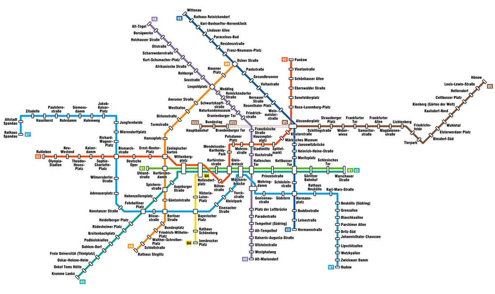
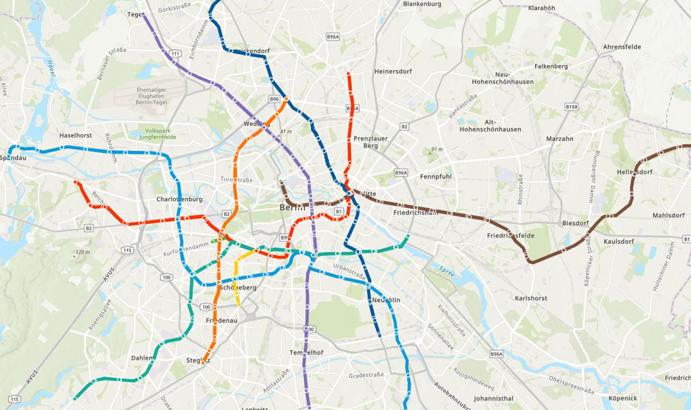
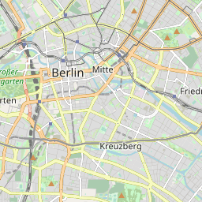
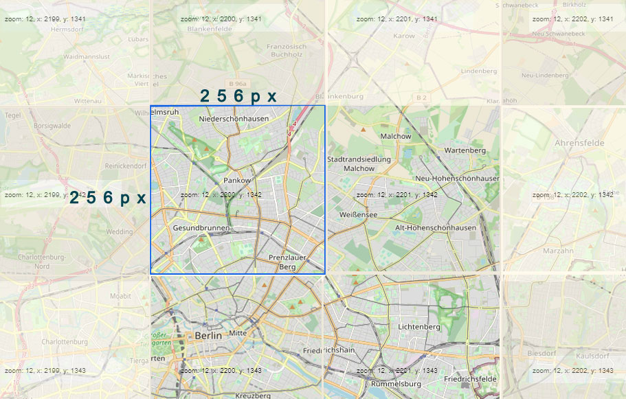

Interaktive Karte über die Entwicklung und den Bau der Berliner U-Bahn.
19 Dezember 2023 | Programmierung, DatenbearbeitungDie erste Untergrundbahn Berlins entstand 1895 als Verbindungstunnel zwischen zwei AEG-Fabriken.Dennoch setzte sich später Siemens mit seinem preiswerteren Modell beim Tunnelbau durch. Im Jahr 1902 nahm in Berlin die erste elektrische Untergrundbahn für den öffentlichen Personenverkehr ihren Betrieb auf. Die Bahn, die großteils als Hochbahn ausgeführt war, reichte von Berlin bis in die damals selbstständige Nachbarstadt Charlottenburg. Auf einem kurzen Stück berührte sie auch das Territorium der ebenfalls damals noch selbstständigen Stadt Schöneberg.
Von diesem Moment an begann eine neue Ära in der Geschichte der Stadt, in der die U-Bahn sicherlich eine wichtige Rolle spielt.
Ein kurioses Detail ist, dass das U-Bahn-System in den folgenden Jahrzehnten auf dem Stadtplan mit Bezug auf den tatsächlichen Standort dargestellt wurde. Und nach den Daten, die ich finden konnte, begann man erst im sechsundfünfzigsten Jahr des letzten Jahrhunderts, als sich die Gesamtzahl der Stationen der Hundertgrenze näherte, eine schematische Darstellung der U-Bahn-Linien zu verwenden, die sich als praktischer und für die Fahrgäste leichter wahrnehmbar erwies.
Das vereinfachte Schema ist schneller zu lesen. Gleichzeitig vermittelt es aber keine Vorstellung von der tatsächlichen Lage der Linien und verbirgt Details. Lange U-Bahn-Strecken unterscheiden sich nicht von kurzen. Es gibt keine Verbindung zur Geografie.
Wischen nach links/rechts über das Bild.


Erstellen wir eine interaktive Karte der Berliner U-Bahn-Linien und schauen wir uns ihre Geschichte an - wie sich eines der größten Netze Europas entwickelt hat.
Um eine solche Karte zu erstellen, benötigen wir:
Lassen Sie uns zunächst die Anforderungen an den Anzeigeverfahren definieren. Er sollte in der Lage sein:
Die ersten drei Punkte sind in verschiedenen Open-Source-Bibliotheken und geografischen Informationssystemen verfügbar. Ich werde QGIS für die Datenaggregation und -bereinigung, ArcGIS Javascript SDK und React.JS für die Visualisierung verwenden. Für den vierten Punkt gibt es eine einfache Möglichkeit, das ArcGIS Javascript SDK zu implementieren, wir müssen nur die notwendigen Anpassungen für unsere Daten vornehmen.
Eine kleine Erklärung für diejenigen, die noch nie mit den Konzepten von Kacheln und
Kachelserver in Berührung gekommen
sind.
Die Online-Karten, an die die meisten Nutzer gewöhnt sind - OpenStreetMap, Google und Apple maps
usw. - bestehen aus
Kacheln: Quadrate mit einer Seitenlänge von 256 Pixeln.
Jede Kachel hat x-, y- und z-Koordinaten:

z ist der Maßstab, in dem sie angezeigt wird (je größer der z-Wert, desto größer die Vergrößerung); x - Seriennummer der Kachel in horizontaler Richtung im gewählten Maßstab z; y - fortlaufende Nummer der Kachel in vertikaler Richtung im gewählten Maßstab z. Eine Kachel mit den Koordinaten x=2200, y=1343 und z=12 sieht zum Beispiel so aus wie das Bild auf der rechten Seite.
Das Gesamtbild, das wir letztendlich sehen, wird aus vielen Kacheln zu einem einzigen Bild zusammengefügt:

Wenn wir die Karte in einem Browser bearbeiten - hineinzoomen oder seitwärts scrollen - werden die erforderlichen Kacheln bei Bedarf vom Server heruntergeladen. In unserem Fall werden ArcGIS-Datenserver als Kachelserver verwendet.
Der nächste Schritt besteht darin, der Karte Stationen und U-Bahn-Linien hinzuzufügen. Jede
Linie entspricht einer
eigenen historischen Farbe.
Als Nächstes müssen wir einen Slider mit einem Bereich vom 15. Februar 1902 bis zum heutigen Tag
"anzuschrauben". Mit
ihm stellen wir das "aktuelle" Datum für die Anzeige des U-Bahn-Schemas so ein, wie es an diesem
Tag war.
Um feststellen zu können, welche Objekte an einem bestimmten Tag vorhanden waren, sind
entsprechend aufbereitete Daten
erforderlich. OpenStreetMap ist so konzipiert und entwickelt worden, dass es die tatsächlichen
Details zeigt - das, was
im Moment existiert. Für einige Arten von Objekten ist es möglich, das Jahr ihrer Entstehung
anzugeben (z. B. das
Baujahr eines Gebäudes). Aber für Objekte, die nicht mehr existieren oder die sich in der
Vergangenheit verändert haben,
gibt es keine Daten. Um dies zu beheben, fügen wir jedem Objekt, das auf der Karte angezeigt
werden kann, zwei Merkmale
hinzu:
from_date - das Datum, ab dem das Objekt auf der Karte
erscheint
to_date - das Datum, ab dem das Objekt nicht mehr auf der Karte erscheinen
soll.
Mit Hilfe dieser Merkmale ist es möglich, die auf der Karte angezeigten Daten in Abhängigkeit
vom gewählten Datum zu
steuern.
Das Ergebnis ist eine interaktive Karte der Berliner U-Bahn, auf der man sehen kann, wie sich das Netz entwickelt hat. Zum Beispiel, in welche Richtungen es sich entwickelt hat, mit welcher Geschwindigkeit neue Bahnhöfe eröffnet wurden, und einfach um nostalgisch zu werden.
Der Slider ist für Zeiträume von 10 Jahren eingestellt. Man kann auf die U-Bahn-Linien und Haltestellen klicken, um kurze Informationen zu erhalten.
Web-App in einem neuen Fenster öffnen..